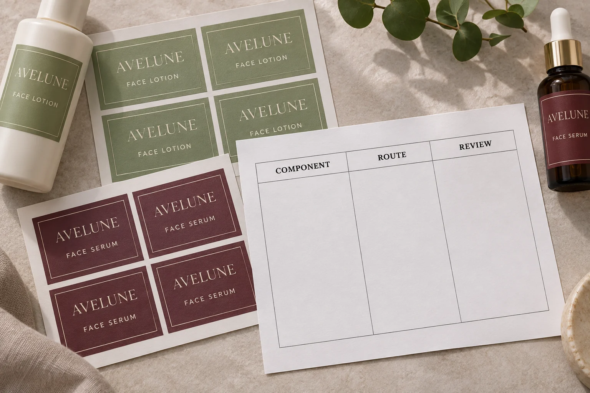

Use one label supplier across a cosmetic range when it can support the required constructions, approvals and receiving arrangements under a clear scope. Split the range between active suppliers when a meaningful requirement benefits from a separate route and your team can manage the additional handoffs. Decide which designs each route owns before comparing the combined supply plan.
This is a choice about concurrent production. Both suppliers may receive routine orders. A standby second source serves a different purpose: it remains an alternate to activate when needed. Neither two active suppliers nor one commercial contact automatically proves that underlying production is independent.
Start with a range requirement map
List each SKU and printed component, its artwork revision, intended construction, finish and application method. Mark which decisions need to stay coordinated across the range. A shared brand identity may need a common appearance reference, while different containers can require different materials or dimensions. A common color name does not make two constructions equivalent.
Ask a candidate supplying the complete range to identify which work it performs and which work uses another production route. A commercial offer can involve partner production. For example, DJB Print's service page describes printing labels and coordinating other packaging through partners. That is its stated service model, not a YT offer or an independently audited capability statement. The purchasing lesson is to define the supplied scope rather than infer the production chain from the number of contacts.
For a split-label proposal, identify the reason for the split. Is one process unavailable on the other route, does a different receiving operation need a particular format, or is another requirement genuinely better served? Keep the reason specific. Dividing an otherwise coherent order solely because there are two quotations can create extra work without solving a purchasing gap.
Compare the work that remains with the brand
With a complete-range supplier, confirm whether the proposal actually includes coordinating the versions, finishes and deliveries being compared. One invoice does not prove matched appearance or simultaneous arrival. Request the relevant samples and acknowledged milestones for the included lines.
With active suppliers assigned different components, identify who maintains the common artwork and range reference, sends revisions and reconciles incoming quantities. Keep route-specific physical approvals attached to the material and printer that produced them. The skincare label system guide helps coordinate identity across products; it does not make one supplier's physical approval transferable to another.
Compare the complete acknowledged prices and the work still required from your own team. Include separately quoted sample, setup, freight and coordination work where relevant. Do not assume consolidation always reduces price or that a specialist always produces a better result. Those conclusions need the actual proposals and evidence.
Use a design-to-route allocation record
Complete this editorial worksheet before awarding a split or consolidated range. Add one entry per design and physical component.
| Field | What to record | Decision it supports |
|---|---|---|
| Owned scope | SKU, component, quantity, artwork version and named supplier route. | Each required component has one clear production assignment. |
| Approval boundary | Construction and appearance reference, reviewer and route-specific sample. | Required shared appearance is reviewed without assuming identical material behavior. |
| Change handoff | Owner sending changes, acknowledgment by each affected route. | All active suppliers use the current requirement before release. |
| Arrival and balance | Required usable quantities, destination, milestones and remaining dependencies. | The combined supply supports the intended filling plan. |
Map the components first, then review the evidence for their assigned routes. Confirm the change owner and reconcile the combined arrival requirement. Compare a consolidated and split proposal only after both can be described at that level. The output is a specific allocation and handoff plan, rather than a general preference for one or many suppliers.

Two conditions can support different choices
In a hypothetical three-product launch, the proposed supplier can provide the required constructions, suitable references and a confirmed receiving plan for all components. Keeping the range together may reduce the brand's separate handoff work. Confirm the scope rather than assuming it from the supplier's catalog.
In another hypothetical range, one decorative component requires a separate supported production route while the remaining labels already have an accepted supplier. Splitting can be worth evaluating if the new route's sample, format and arrival requirements are clear. The additional coordination belongs in the comparison. If the split creates unmatched front and back quantities, it may not support the planned bottle run even when both suppliers ship their individual orders.
Use the setup allowance guide for operating consumption and the quantity variance guide for agreed supply quantities. Neither replaces the allocation decision about which supplier will provide each component.
Hold a split that has no handoff owner
Pause the affected award if two suppliers believe they own the same version, nobody owns a required component, or a shared appearance requirement lacks a common reviewed reference. Resolve the allocation rather than asking both printers to guess which version the other will supply.
If the purpose is resilience, also ask what production, material or transport dependencies remain shared. Two commercial names do not establish two independent routes. This worksheet identifies the question; it does not audit a supplier network or promise uninterrupted supply.
Send the complete range and the proposed allocation
For cosmetic bottle and jar labels, provide the component list, quantities, artwork versions, materials, appearance references and receiving requirements. State which lines need a proposal and which already have an assigned route. Ask for included coordination and remaining conditions. The form prepares a message; send the schedule by email or WhatsApp.
Prepare a range allocation inquiry